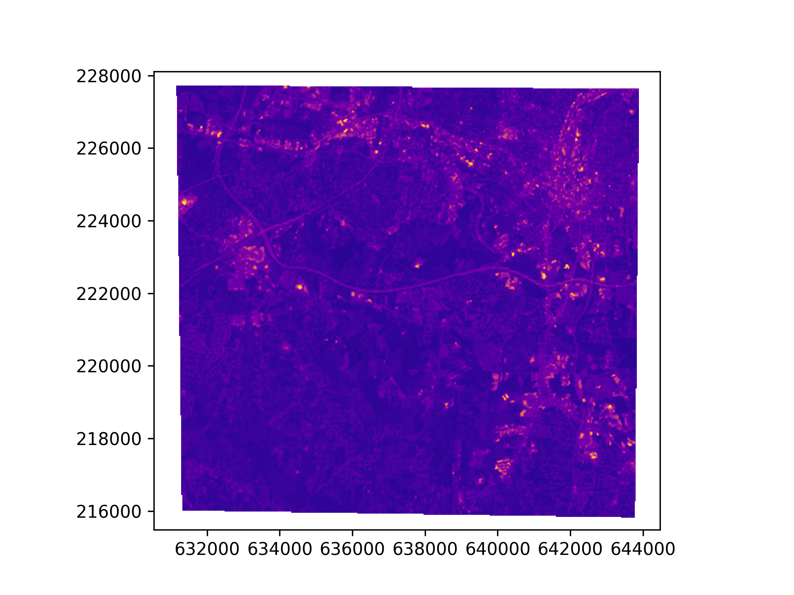
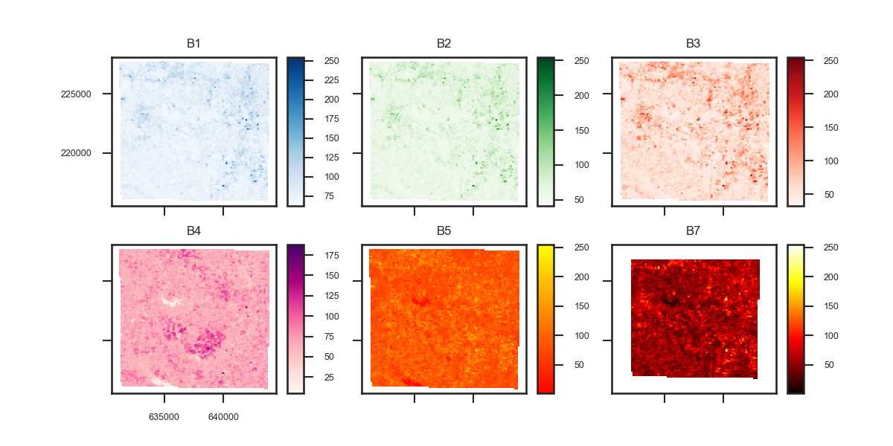

Plotting
Both Raster and RasterLayer objects include basic plotting methods. The
plot method for a RasterLayer object produces a single raster plot using the
matplotlib.pyplot.imshow method.
For convenience, plot settings such as color ramps and stretches can also be
set for each RasterLayer using the RasterLayer.cmap that support matplotlib
cmap's, and the RasterLayer.norm attribute to associate a
matplotlib.colors.Normalize stretch with each RasterLayer:
To plot a single RasterLayer:
from pyspatialml import Raster
from pyspatialml.datasets import nc
stack = Raster([nc.band1, nc.band2, nc.band3, nc.band4, nc.band5, nc.band7])
# set RasterLayer color table
stack.lsat7_2000_10.cmap = "plasma"
# plot a single layer using an existing axis
fig, ax = plt.subplots()
stack.lsat7_2000_10.plot(ax=ax)
plt.show()

For RasterLayers that represent categorical data types, e.g. land cover, then
the RasterLayer.categorical=True attribute will cause the cmap to be
converted to a discrete scale.
The default plot method for a Raster object produces a raster-matrix plot of
the individual RasterLayers. By default this plot preserves the plotting
attributes of the individual rasters:
Plot all RasterLayers in a Raster object:
stack.lsat7_2000_10.cmap = "Blues"
stack.lsat7_2000_20.cmap = "Greens"
stack.lsat7_2000_30.cmap = "Reds"
stack.lsat7_2000_40.cmap = "RdPu"
stack.lsat7_2000_50.cmap = "autumn"
stack.lsat7_2000_70.cmap = "hot"
stack.plot(
title_fontsize=8,
label_fontsize=6,
legend_fontsize=6,
names=["B1", "B2", "B3", "B4", "B5", "B7"],
fig_kwds={"figsize": (8, 4)},
subplots_kwds={"wspace": 0.3}
)
plt.show()

The Raster.plot method also provides cmap and norm arguments that can be
used to override the settings of the individual RasterLayers. Additional
settings can be passed to control plot layout using the figure_kwds,
legend_kwds and subplots_kwds arguments.